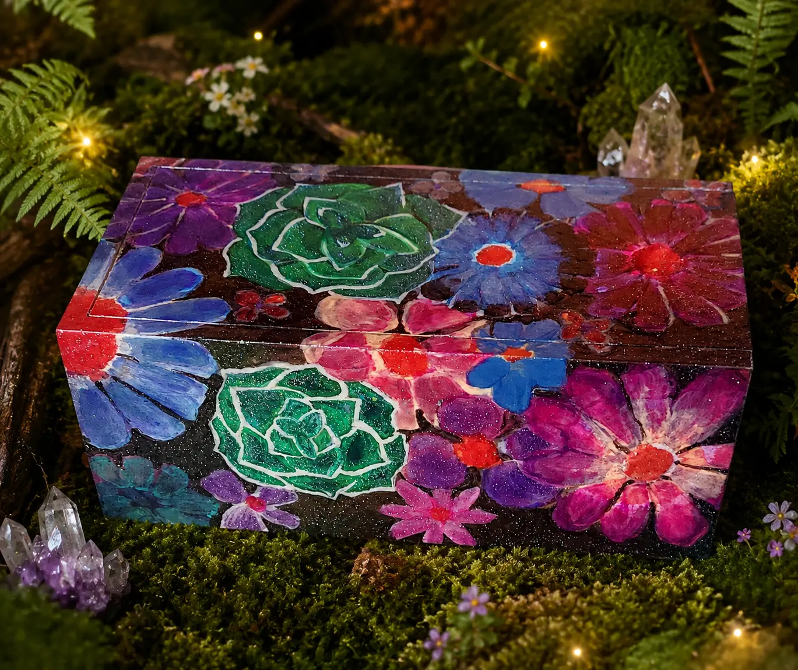
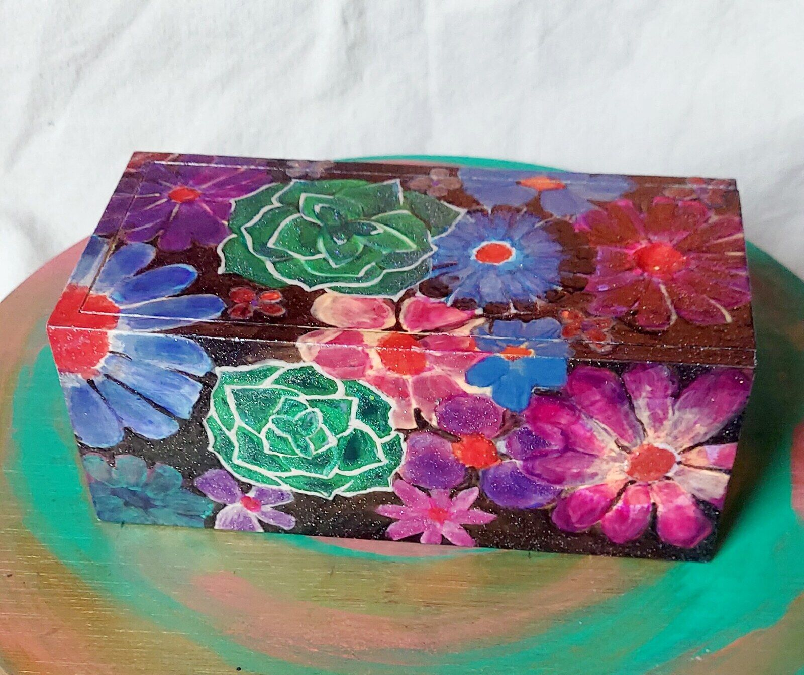
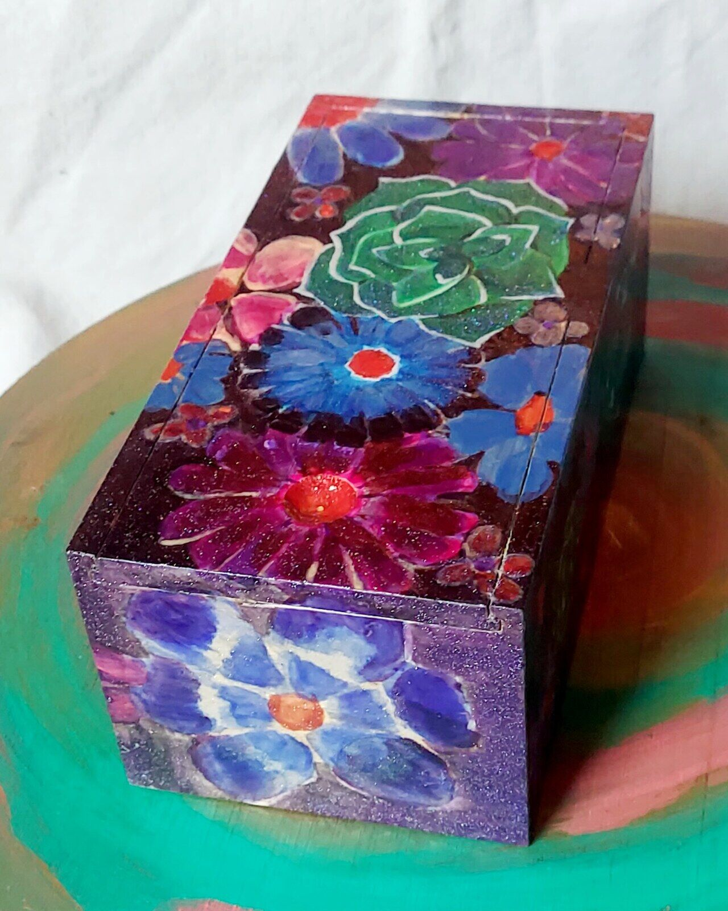
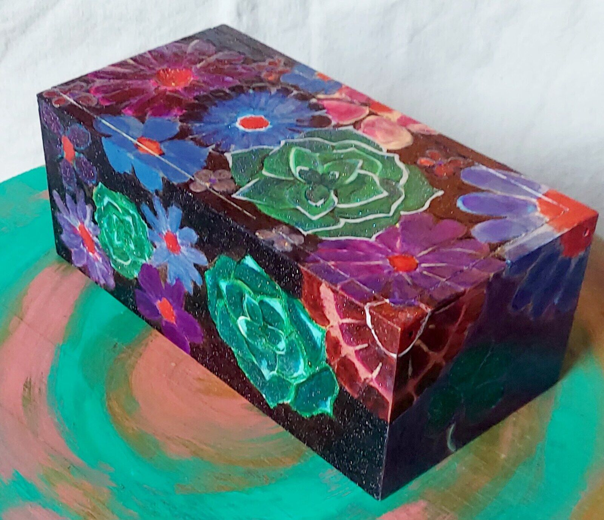

Hand-painted · Thermochromic · One of a kind
Secret Bloom
$99
A garden of jewel-toned flowers and painted succulents wraps around this one-of-a-kind color-changing keepsake box.
Hand-painted on every visible side. The thermochromic finish shifts with temperature and changes fastest in hot sunlight.
Send a Raven about this piece ↗

